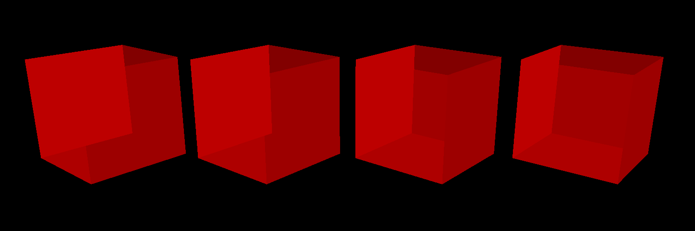
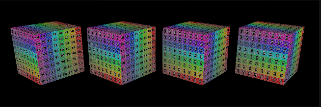
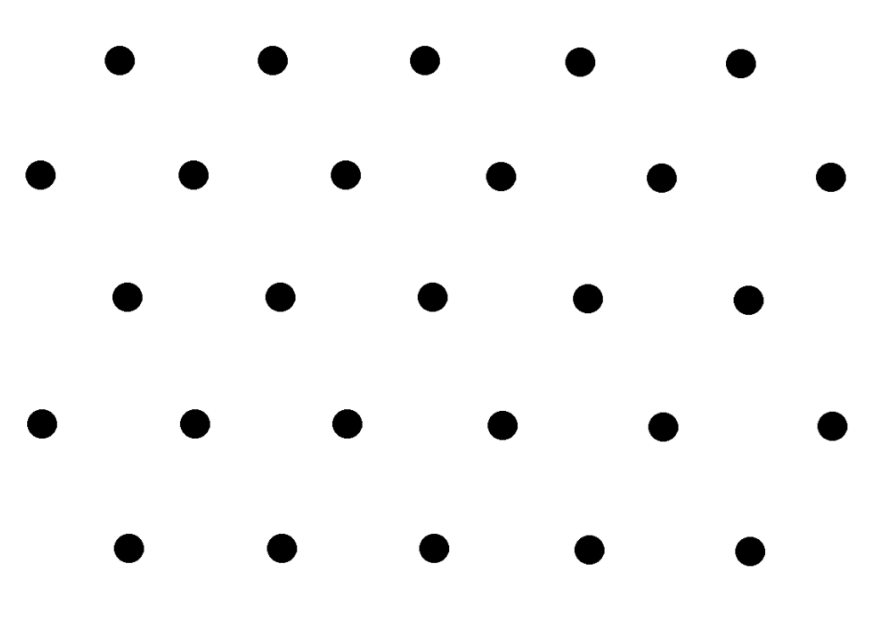
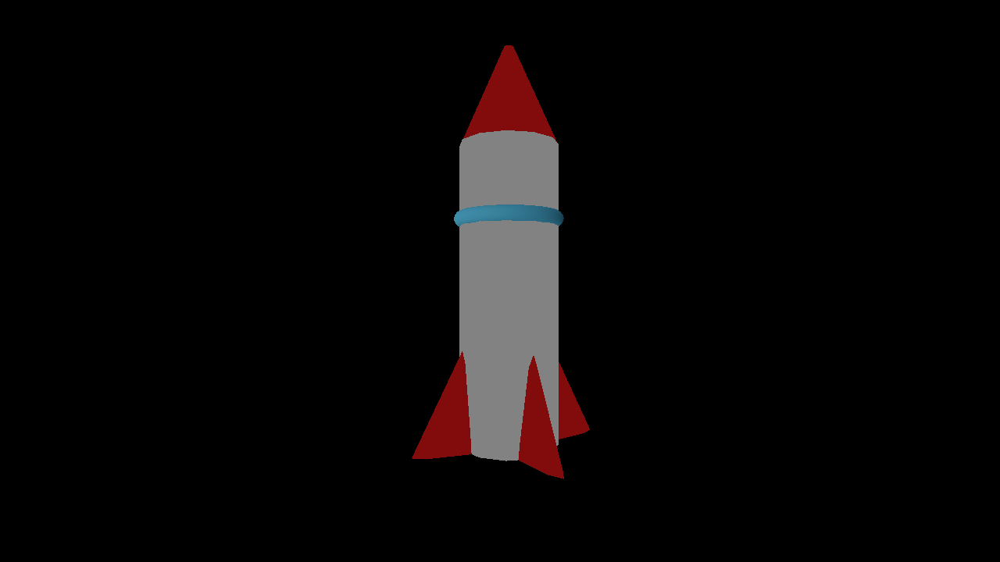

Please replace the above image with your own screenshot of the rasterized wireframe cubes, but all in **RED**.
This can be done by doing the following:
* Open `media/js3d/A1-cubes.js3d` in the GUI,
* Set the DrawStyle of every cube to be 'Wireframe',
* Setting the material of one of the cubes to be a Constant type with a red color,
* Click on the Render tab, then open the Render Window, and use the default settings to rasterize the scene. You will need to switch from the `Path Tracer` option to `Software Rasterizer` option.
Your completion will be graded based on the on the above picture, the reference `test.a1.task2.cpp` file and
checking that rasterizing wireframe meshes will look decent.
(##) A1T3 CHECKPOINT
Reference image:

Please replace the above image with your own screenshot of the rasterized flat triangles cubes, but all in **RED**.
This can be done by doing the following:
* Open `media/js3d/A1-cubes.js3d` in the GUI,
* Set the DrawStyle of every cube to be 'Flat',
* Setting the material of one of the cubes to be a Constant type with a red color,
* Click on the Render tab, then open the Render Window, and use the default settings to rasterize the scene. You will need to switch from the `Path Tracer` option to `Software Rasterizer` option.
Your completion will be graded based on the above picture, the reference `test.a1.task3.cpp` file and
checking that rasterizing flat triangle meshes will look decent.
(##) A1T4 CHECKPOINT
You do not need any screenshots for this task. However, please answer the following questions about `media/js3d/A1T4-blend-depth.js3d1`:
* What combination of blend and depth styles would enable us to see three colors?
* Red: Blend: Replace, Depth: Always
* Green: Blend: Replace, Depth: Always
* Blue: Blend: Replace, Depth: Always
* What combination of blend and depth styles would enable us to see five colors?
* Red: Blend: Add, Depth: Always
* Green: Blend: Add, Depth: Always
* Blue: Blend: Add, Depth:
Do note that there are multiple correct answers to the above two questions - as long as you provide a valid one, you will receive credit.
Your completion will be graded based on the on the above answers, the reference `test.a1.task4.cpp` file and
checking that rasterizing with different blend and depth modes will look decent.
(##) GenAI Use CHECKPOINT
Which model(s) did you use (e.g., ChatGPT-4, Claude-2, etc.)?
I used Claude: Sonnet 4.5
For what purpose(s) did you use GenAI (e.g., brainstorming, code generation, debugging, etc.)?
I used it to help me understand the big idea and general flow of the problem
What was it good at? What was it bad at?
It was good at providing good information and thorough explanations
(##) A1T5 FINAL
Reference image:

Please replace the above image with your own screenshot of the rasterized smooth and correct triangles cubes.
This can be done by doing the following:
* Open `media/js3d/A1-cubes.js3d` in the GUI,
* Set the DrawStyle of the wireframe cube to be 'smooth' and the DrawStyle of the flat cube to be 'correct',
* Click on the Render tab, then open the Render Window, and use the default settings to rasterize the scene. You will need to switch from the `Path Tracer` option to `Software Rasterizer` option.
Your completion will be graded based on the above picture, the reference `test.a1.task5.cpp` file and
checking that rasterizing flat triangle meshes will look decent.
(##) A1T6 FINAL
You do not need any screenshots for this task.
Your completion will be graded based on the reference `test.a1.task6.cpp` file and
checking that rasterizing the samplers scene will look decent.
(##) A1T7 FINAL
Insert a picture of your sample pattern here (up to you on how you created it):

My custom sample patern is composed of shifting every other row by half a unit, creating a pattern consisting of many triangles. It would to well with irregular shapes and diagonal lines, but not as well for straight vertical or horizontal lines.
(##) RASTERIZED IMAGE FINAL
Your image:

I created a simple rocket model using a cylinder, cones, and a torus. I colored them differently to make each shape stand out. I didn't use any free models
(##) GenAI Use FINAL
Which model(s) did you use (e.g., ChatGPT-4, Claude-2, etc.)? Claude Sonnet 4.5
For what purpose(s) did you use GenAI (e.g., brainstorming, code generation, debugging, etc.)? I used it to figure out the large steps that I had to implement to achive the goals for each task, and how each step connected with each other. I also used it for some debugging
What was it good at? What was it bad at? It would good at what I asked it to do, but it did make some erroneous assumptions sometimes regarding the many different variables in the code.
(##) EXTRA CREDIT FINAL
Use this section to explain any extra credit implementations you have made.
(##) Feedback
Use this section to provide feedback about the assignment.